Meta Ads continue to be one of the most effective digital advertising platforms for generating leads. Whether you run a local business, healthcare clinic, real estate company, educational institution, resort, ecommerce store, or service-based business, Meta Ads can help you reach potential customers at scale.
However, generating leads is only half the challenge. The real goal is generating high-quality leads that convert into paying customers.
Many advertisers struggle with high cost per lead (CPL), poor lead quality, and low conversion rates because their campaigns are not properly optimized.
This guide covers 25 proven Meta Ads lead generation strategies that can help you reduce CPL, improve lead quality, increase conversions, and maximize return on investment in 2026.
Table of Contents
- Why Meta Ads Are Effective for Lead Generation
- Understanding the Meta Ads Funnel
-
25 Proven Ways to Generate High Quality Leads
- 1. Define Clear Campaign Goals
- 2. Choose the Right Campaign Objective
- 3. Use Instant Forms Correctly
- 4. Create High Converting Ad Creatives
- 5. Write Benefit-Driven Ad Copy
- 6. Use Strong Calls to Action
- 7. Build Custom Audiences
- 8. Create Lookalike Audiences
- 9. Retarget Website Visitors
- 10. Retarget Video Viewers
- 11. Optimize Geographic Targeting
- 12. Exclude Irrelevant Audiences
- 13. Improve Lead Form Quality
- 14. Use Conditional Questions
- 15. Add Qualification Questions
- 16. Test Multiple Creatives
- 17. Test Different Headlines
- 18. Optimize Ad Placements
- 19. Monitor Frequency Score
- 20. Improve Landing Pages
- 21. Set Up Conversion API (CAPI)
- 22. Track Offline Conversions
- 23. Analyze Lead Quality
- 24. Scale Winning Ad Sets
- 25. Continuously Optimize Campaigns
- Common Meta Ads Mistakes to Avoid
- Meta Ads Lead Generation Checklist
- Final Thoughts
Why Meta Ads Are Effective for Lead Generation
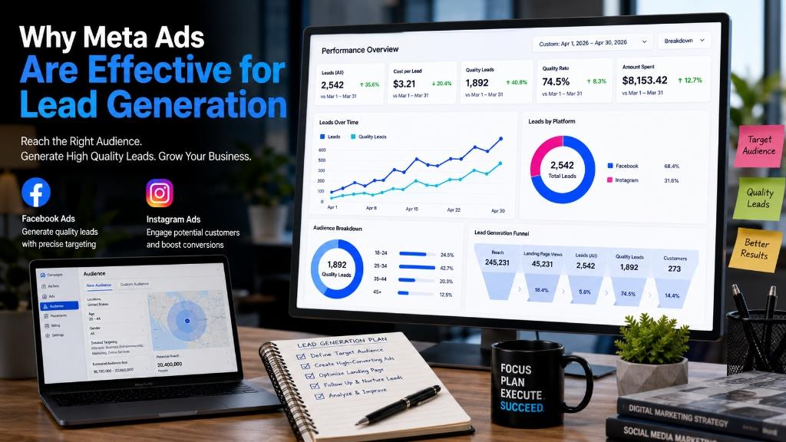
Figure: Meta Ads performance dashboard showcasing leads volume, CPL metrics, and platforms distribution.
Meta Ads offer several advantages for modern digital marketing:
- Massive global and local audience reach across Facebook and Instagram
- Advanced targeting options including demographic, behavioral, and interest-based segmentation
- Cost-effective lead generation models customized for different industries
- Strong retargeting capabilities to re-engage warm audiences
- Detailed audience insights and analytics to refine campaign strategies
- Scalable campaign structure for businesses of all sizes
Businesses can target users based on precise criteria:
- Interests: Pages liked, topics engaged with, and user affinities.
- Behaviors: Buying habits, device usage, and travel behaviors.
- Demographics: Age, gender, relationship status, job titles, and education.
- Website activity: Pixels tracking visitors, page views, and specific actions.
- Customer lists: Custom CRM data uploaded securely to Meta.
- Lookalike audiences: Algorithmic modeling to match your best customer profiles.
This comprehensive suite of options makes Meta Ads a powerful platform for acquiring leads.
Understanding the Meta Ads Funnel
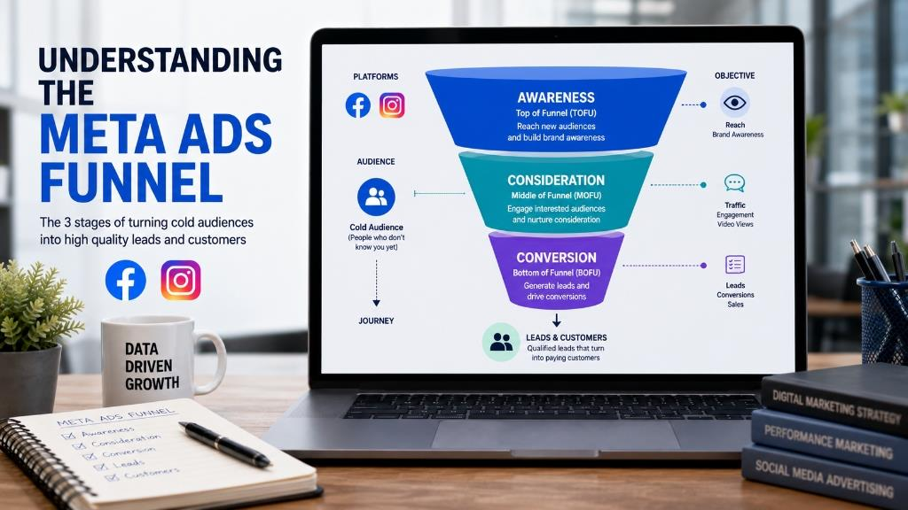
Figure: The Meta Ads Funnel mapping customer journey stages from awareness to lead conversions.
Successful lead generation requires a structured funnel to move users from cold prospects to paying customers.
Top of Funnel (Awareness)
Introduce your brand, services, and values to new audiences using broad targeting, educational video creatives, and informative posts.
Middle of Funnel (Consideration)
Educate interested users about your specific services, solutions, and unique selling propositions (USPs). Retarget those who have visited your site or watched your videos.
Bottom of Funnel (Conversion)
Encourage high-intent users to submit lead forms, place calls, or book consultations. This is where you deploy direct CTAs and conversion forms.
The best lead generation campaigns address all stages of the customer journey for sustainable growth.
25 Proven Ways to Generate High Quality Leads
1. Define Clear Campaign Goals
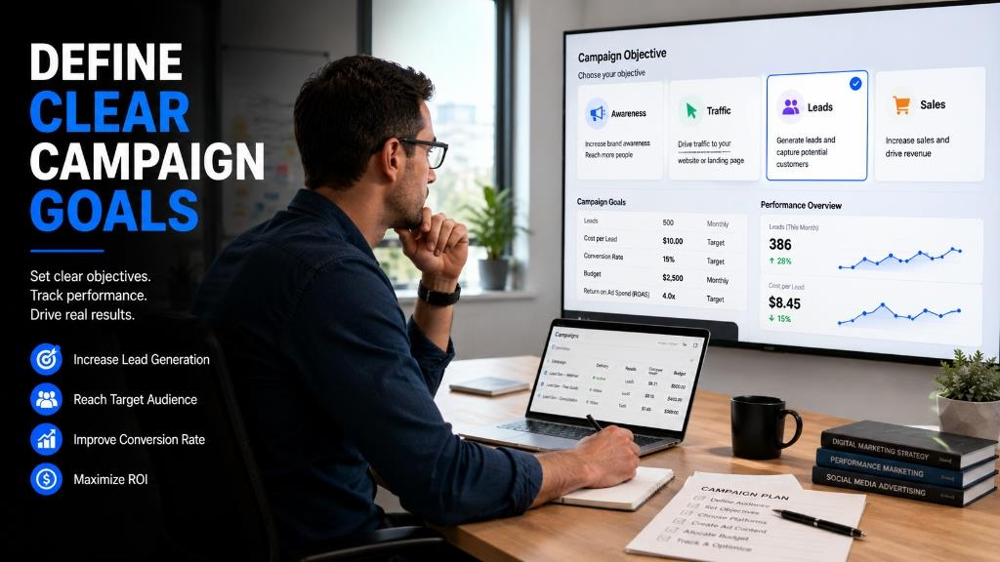
Figure: Defining campaign goals and key performance indicators (KPIs) to drive positive conversion metrics.
Before launching a campaign, determine whether you want leads, calls, appointments, sales, or website inquiries. Clear goals improve campaign performance and help Meta's machine learning model optimize for the right user actions.
2. Choose the Right Campaign Objective
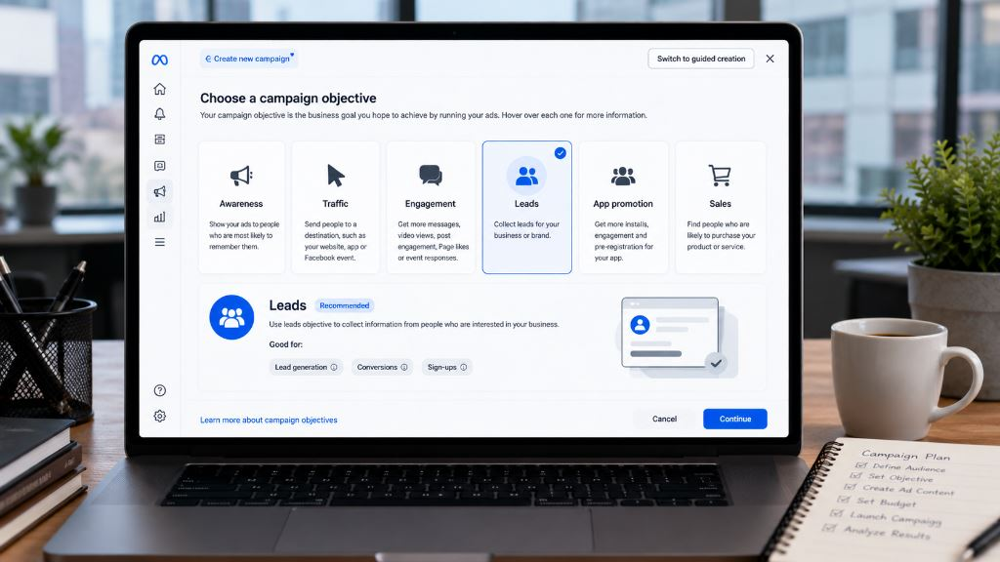
Figure: Meta Ads Manager interface highlighting the Leads campaign objective option.
Meta offers multiple objectives. For lead generation, consider using the **Leads**, **Conversions**, or **Sales** objectives. Choose the objective that aligns with your specific business goals and integration setups.
3. Use Instant Forms Correctly
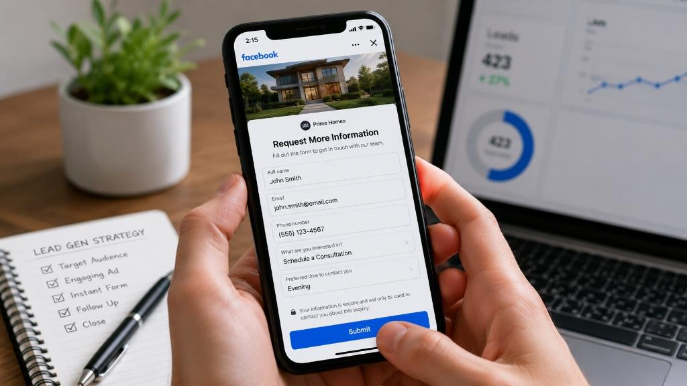
Figure: Interactive mobile preview of a customized Meta Instant Form asking for information.
Instant Forms make it easy for users to submit inquiries without leaving Meta platforms. Keep forms simple and relevant, and ensure you use 'Higher Intent' forms to filter out accidental clicks.
4. Create High Converting Ad Creatives
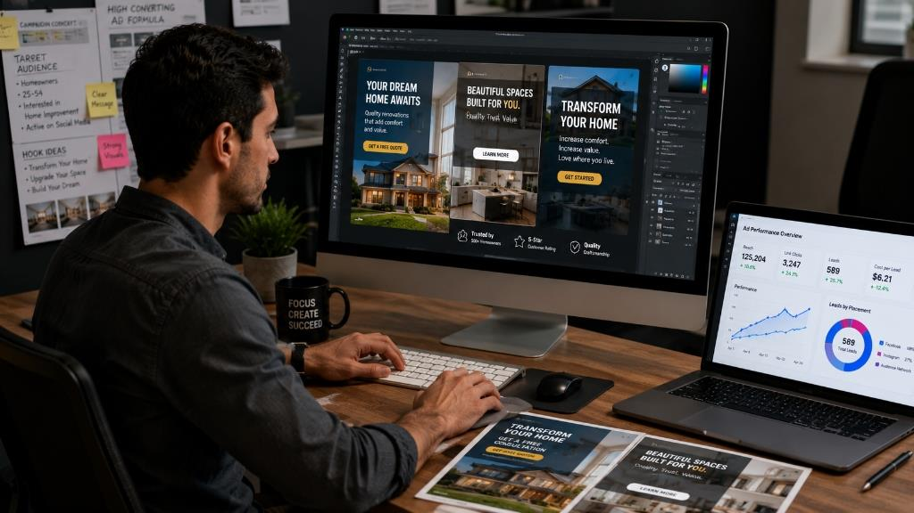
Figure: Designing high-converting visual ad layouts with clear value messaging and brand assets.
Strong visuals attract attention and improve engagement. Use high-quality images, professional video reels, clear branding elements, and strong, clear value propositions in your visual canvas.
5. Write Benefit-Driven Ad Copy
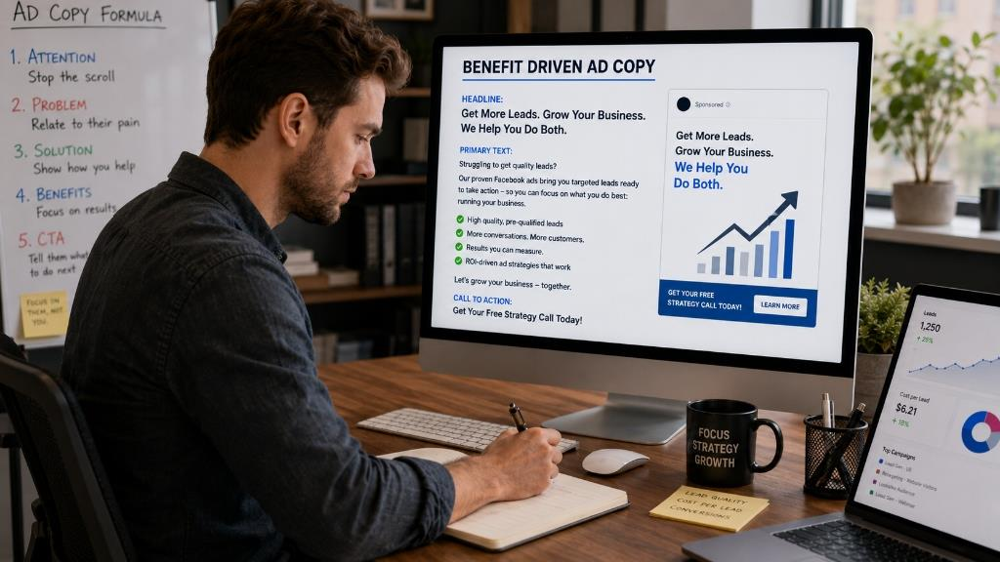
Figure: Ad copy formula highlighting attention hooks, customer problems, solutions, and benefit focuses.
Focus on outcomes rather than features. For example, instead of writing "Experienced Dental Clinic", write "Get a Healthy and Confident Smile with Expert Dental Care". Highlight what the user stands to gain.
6. Use Strong Calls to Action
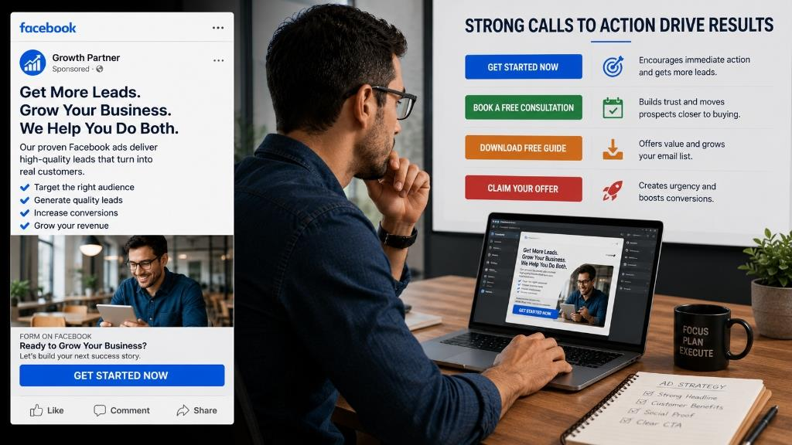
Figure: Impact of clear calls to action (e.g. Get Started, Book Consultation, Download Guide) on user conversions.
The Call to Action (CTA) button should tell users exactly what to do. Effective examples include: Book Now, Get a Free Consultation, Request a Quote, and Contact Us Today.
7. Build Custom Audiences
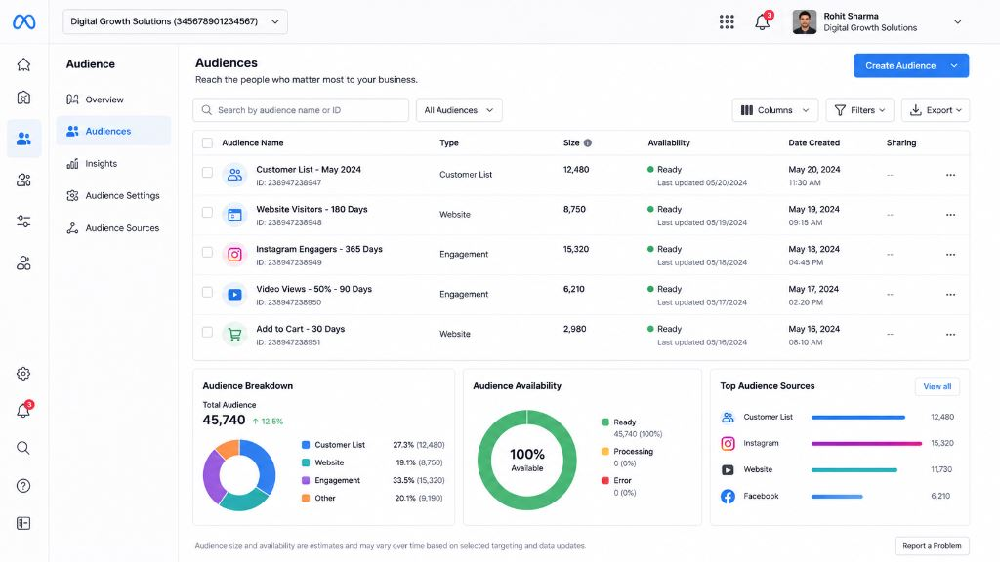
Figure: Setting up custom audience segments based on client lists, site visitors, and user engagement.
Custom Audiences help you target users who have already interacted with your business. Leverage data from website visitors, existing customers, lead lists, and app users to build highly responsive, warm target groups.
8. Create Lookalike Audiences
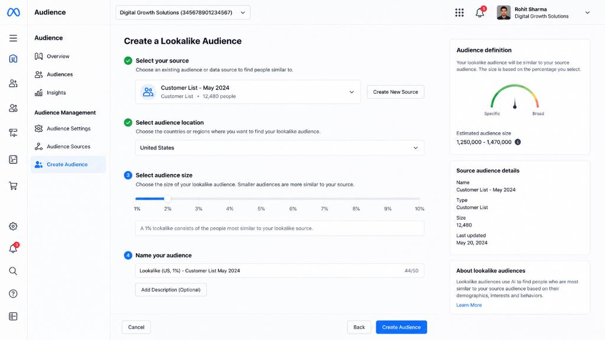
Figure: Creating Lookalike Audiences to discover new high-value users similar to existing client profiles.
Lookalike Audiences help you reach new people who are highly similar to your best customers. This expands your reach while keeping lead quality high.
9. Retarget Website Visitors
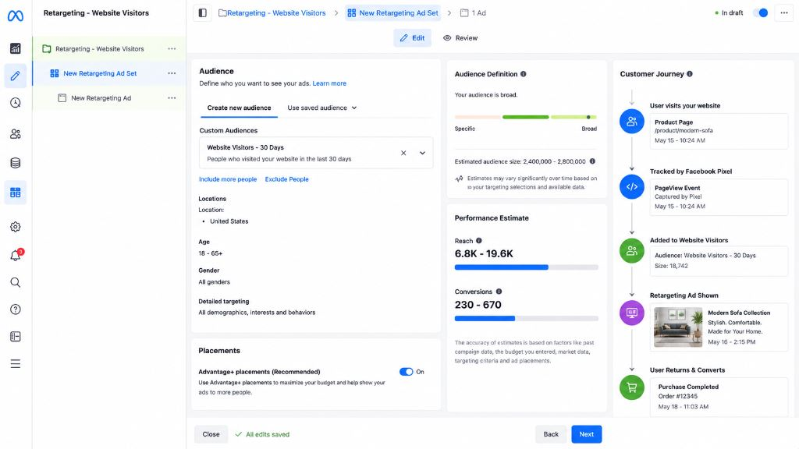
Figure: Retargeting website visitors via custom audiences and tracking user returns through the funnel.
Most users do not convert on their first visit. Set up retargeting campaigns using the Meta Pixel to bring back warm website traffic and convert them with tailored offers.
10. Retarget Video Viewers
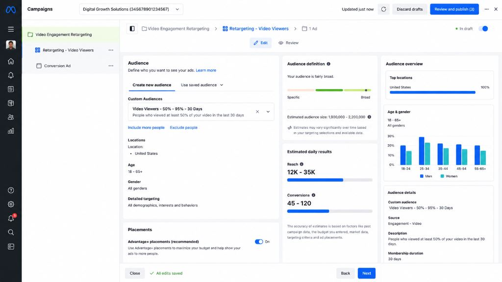
Figure: Setting up retargeting campaigns for video viewers who watched 50% or more of your video content.
Users who watch your marketing videos have already shown interest in your brand. Retarget them with lead generation forms to move them further down the funnel.
11. Optimize Geographic Targeting
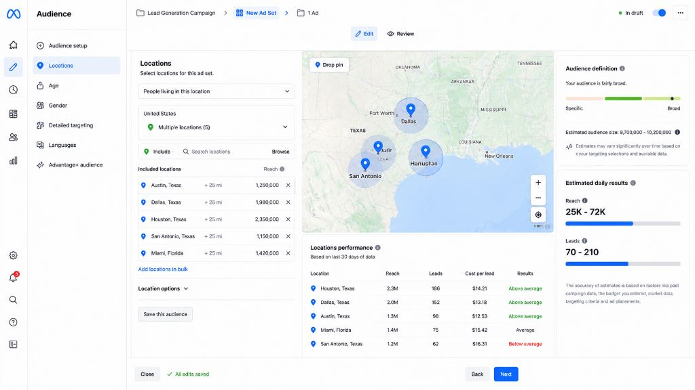
Figure: Target locations mapping dashboard showing performance analytics and geographic exclusions.
Focus your ad spend on locations that generate quality leads. Review geographic performance and exclude regions that consistently produce poor-quality inquiries or low conversions.
12. Exclude Irrelevant Audiences
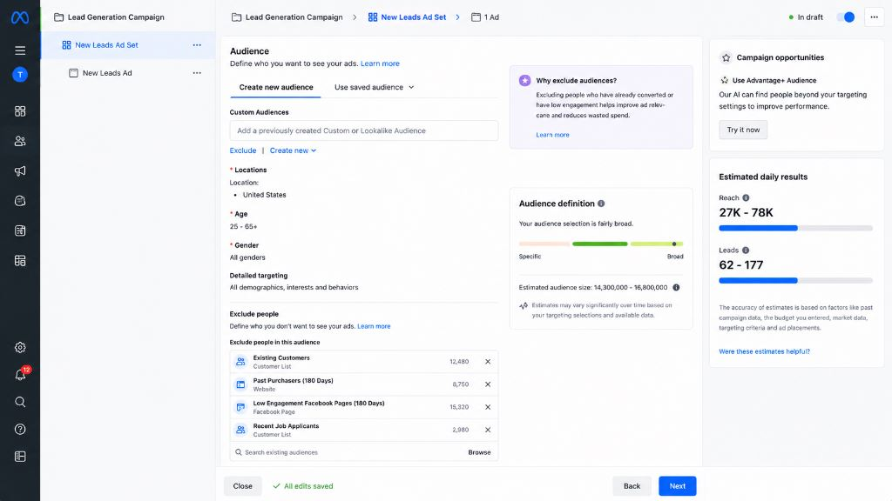
Figure: Excluding existing clients, job seekers, and low-engagement pools to improve audience quality.
Audience exclusions help prevent wasted ad spend. Exclude existing customers, job seekers, and irrelevant demographics from your active prospecting ad sets.
13. Improve Lead Form Quality
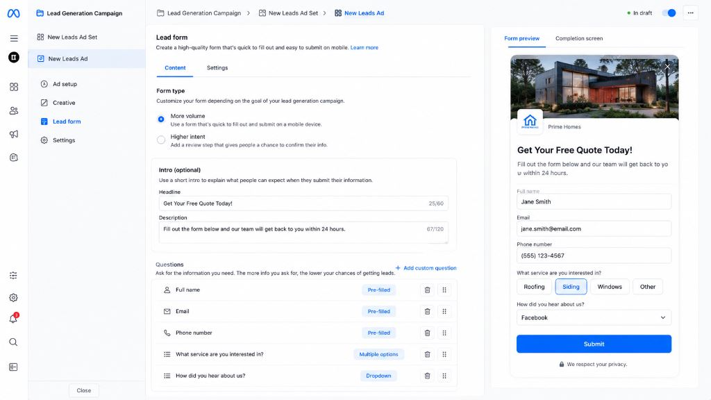
Figure: Setting up Instant Forms with custom questions, introductory headings, and qualification items.
Keep forms concise while collecting important information. Balancing lead quantity and quality is crucial; adding too many fields increases friction, while too few might lower lead intent.
14. Use Conditional Questions
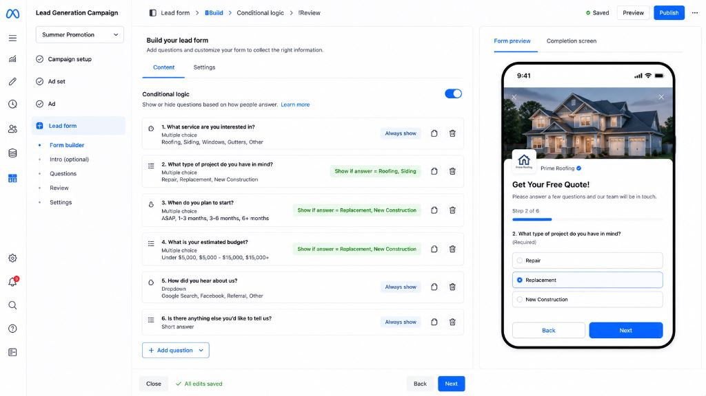
Figure: Configuring conditional logic questions to dynamically route users based on form responses.
Conditional questions dynamically adapt based on a user's previous answer. This helps filter unqualified prospects and routes qualified users to the appropriate sales pipeline.
15. Add Qualification Questions
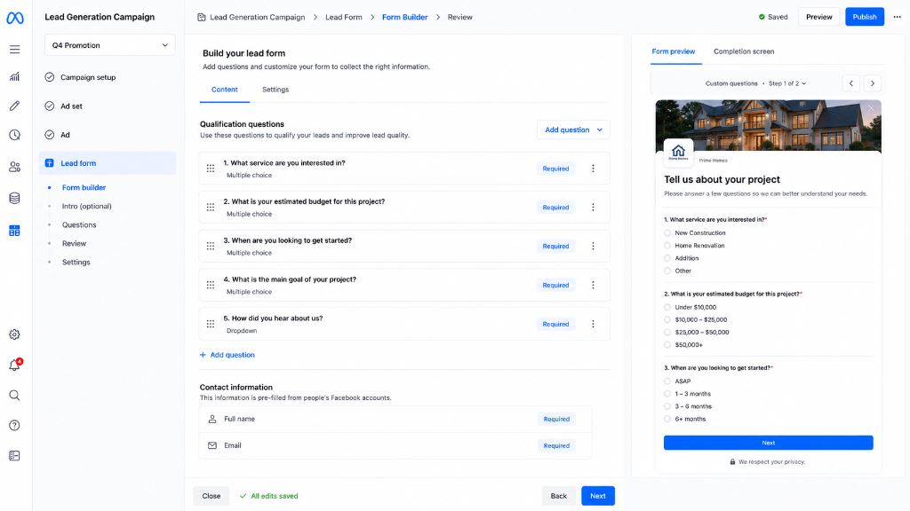
Figure: Customizing qualification questions in the Meta Instant Form editor to verify lead intent.
Include fields for budget range, service requirements, location, or preferred timeline. Qualification questions ensure that only high-intent prospects complete the form.
16. Test Multiple Creatives
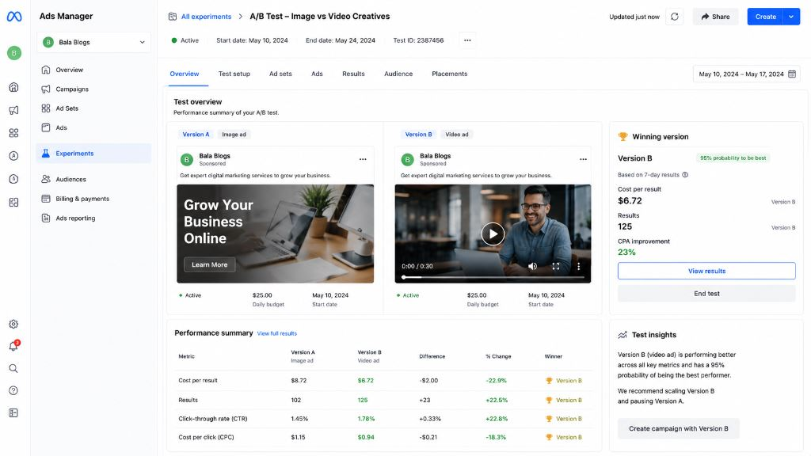
Figure: Meta Ads Manager A/B test dashboard comparing performance between image and video creatives.
Test different images, video hooks, ad formats (like carousel vs single image), and offers. Creative testing helps you identify what resonates best with your target audience.
17. Test Different Headlines
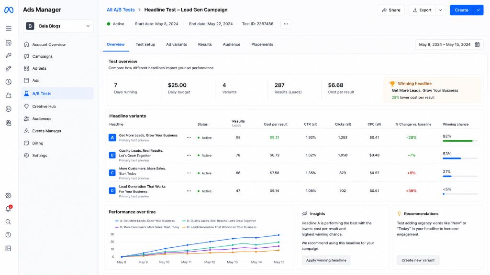
Figure: A/B testing headline variations in Meta Ads to optimize Click-Through Rate (CTR) and lead volume.
Small headline changes can significantly impact click-through rates. Continuously test new headlines that emphasize different benefits or urgency hooks.
18. Optimize Ad Placements
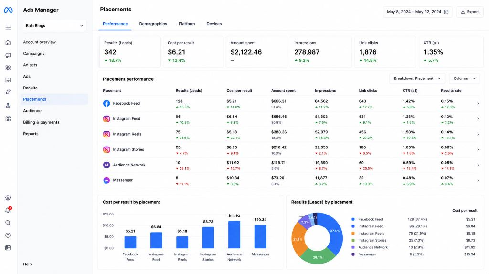
Figure: Placements performance dashboard analyzing cost per lead and conversions across Facebook, Instagram, and Reels.
Monitor placement performance across Facebook Feed, Instagram Feed, Reels, Stories, and the Audience Network. Allocate more budget to top-performing placements to improve efficiency.
19. Monitor Frequency Score
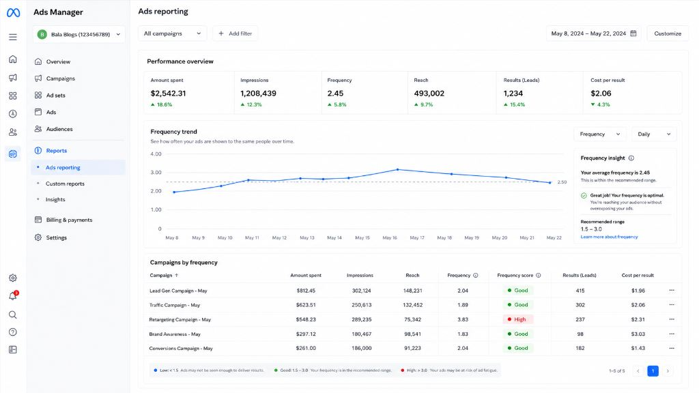
Figure: Frequency Trend dashboard monitoring ad fatigue and frequency score across different campaigns.
High frequency can lead to ad fatigue, which increases CPL and lowers click-through rates. Refresh ad creatives regularly when frequency scores rise.
20. Improve Landing Pages
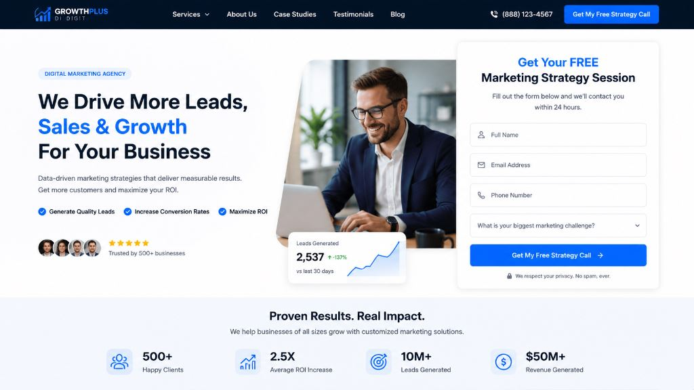
Figure: High-converting landing page structure featuring a clean, responsive layout with visible lead form elements.
If you choose to drive leads to your website, your landing pages must load quickly, match the ad messaging perfectly, be fully mobile-optimized, and feature clear call-to-action forms.
21. Set Up Conversion API (CAPI)
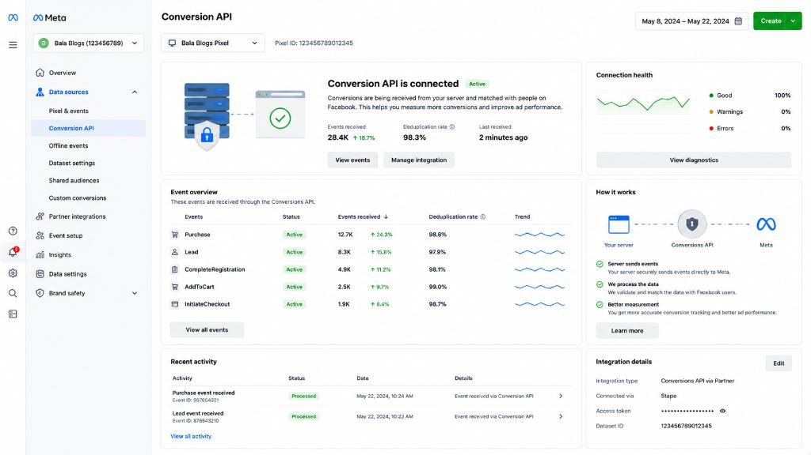
Figure: Meta Events Manager showcasing connected state of Conversion API (CAPI) with event overview matching pixel events.
Conversion API improves data accuracy and tracking reliability by sharing web events directly from your server to Meta. This helps optimize campaign bidding models more effectively.
22. Track Offline Conversions
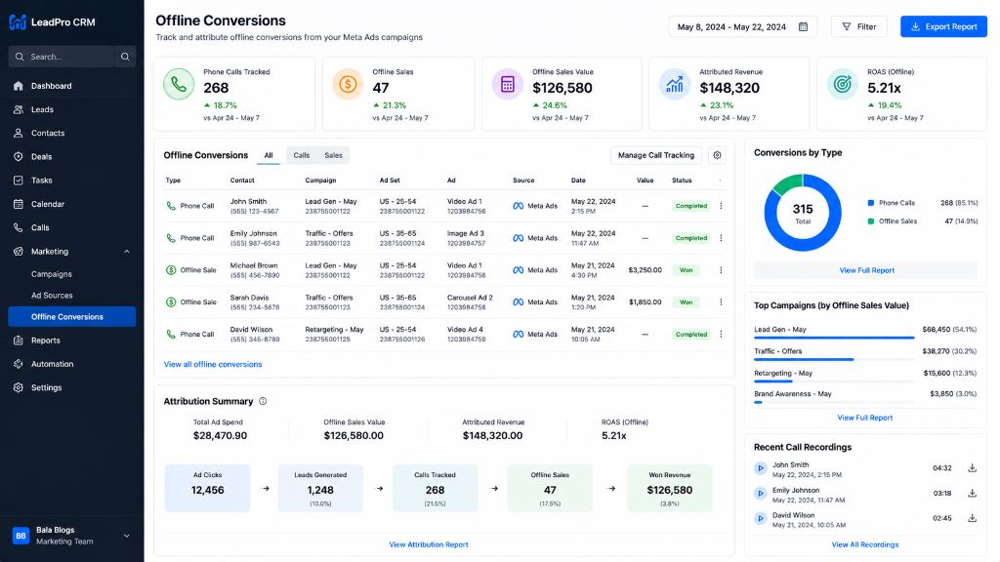
Figure: CRM integration tracking offline conversions such as phone calls, sales value, and attributed ROI.
If your leads convert through offline phone calls, store consultations, or office visits, upload this offline conversion data to Meta to close the loop and train the algorithm on actual sales.
23. Analyze Lead Quality
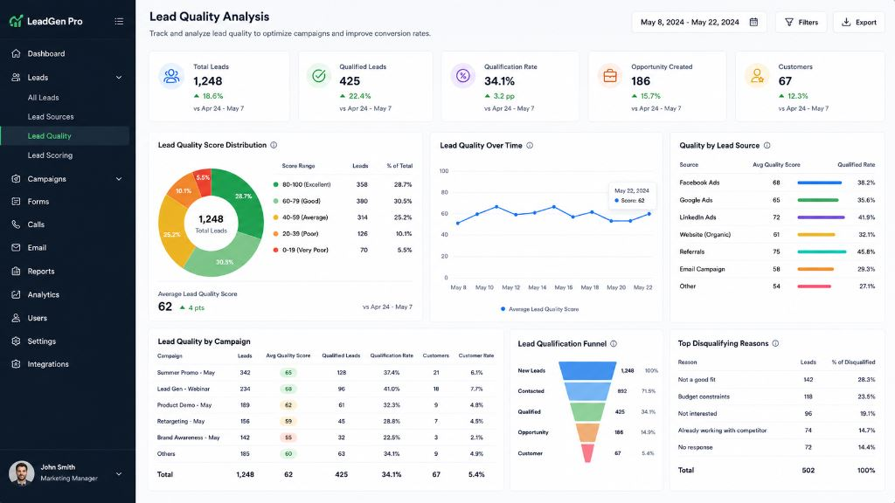
Figure: Lead Quality Analysis dashboard illustrating total leads, qualified rate, and conversions by marketing source.
Not all leads are equal. Evaluate lead-to-customer conversion rates, customer lifetime value, and sales revenue rather than focusing solely on a cheap Cost Per Lead (CPL).
24. Scale Winning Ad Sets
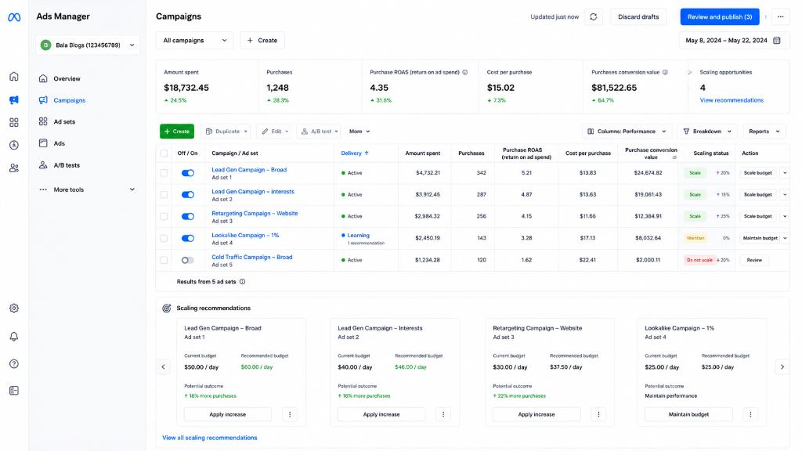
Figure: Meta Ads Manager scaling dashboard showcasing daily budget recommendations and purchase ROAS metrics.
Increase budgets gradually (by 15-20% every 2-3 days) for campaigns that consistently generate quality leads. Avoid sudden budget spikes to prevent resetting Meta's learning phase.
25. Continuously Optimize Campaigns
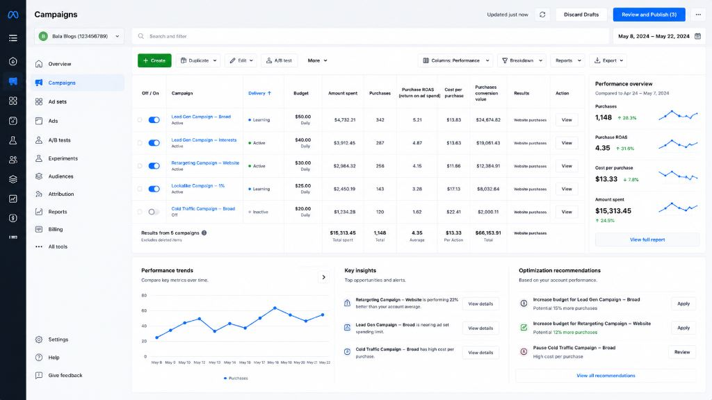
Figure: Performance trends and A/B test insights to continuously optimize budget allocation.
Successful advertisers analyze CTR, CPL, conversion rates, and ROAS on an ongoing basis. Optimization is a continuous process of testing, learning, and refining.
Balamurugan P's Meta Ads Tip
When running Instant Forms, always include a custom multiple-choice question instead of relying entirely on pre-filled fields. This forces the user to interact and type, which filters out accidental auto-fills and increases lead-to-deal conversion rates by up to 40%.
Common Meta Ads Mistakes to Avoid
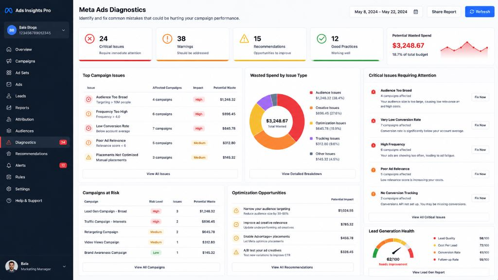
Figure: Diagnostics dashboard displaying critical issues, wasted ad spend by type, and campaign risk levels.
- Targeting overly broad audiences without exclusions or lookalikes.
- Ignoring lead quality in favor of chasing low-cost, unqualified leads.
- Using weak, unengaging creatives that fail to stop the scroll.
- Skipping retargeting and missing out on hot, high-intent traffic.
- Failing to track conversions or ignoring server-side tracking (CAPI).
- Neglecting landing pages, resulting in high bounce rates and wasted ad spend.
- Stopping testing once a campaign is performing well.
Meta Ads Lead Generation Checklist
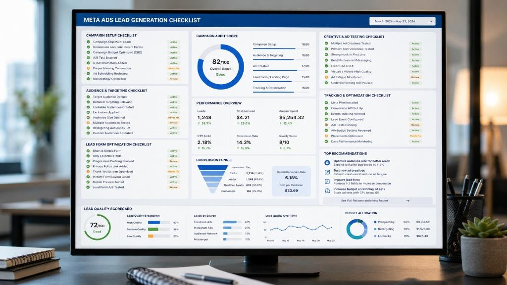
Figure: Comprehensive campaign audit dashboard showcasing checklist scores across setup, audience, lead forms, and analytics.
- Define campaign goals
- Choose the right objective (Leads, Conversions, or Sales)
- Create high-quality creatives (Images, Reels, Videos)
- Write compelling, benefit-driven ad copy
- Use strong, descriptive Calls to Action (CTAs)
- Build custom audiences (Website Pixel, Email list, Video views)
- Create lookalike audiences based on your best customers
- Retarget website visitors to bring back warm traffic
- Retarget video viewers who watched 50% or more of your clips
- Optimize geographic targeting to focus on high-yield regions
- Improve lead forms by selecting 'Higher Intent' formats
- Add qualification questions (e.g. budget, timeframe)
- Test multiple creatives and headlines continuously
- Optimize ad placements across Feed, Reels, and Stories
- Monitor ad frequency to prevent user ad fatigue
- Improve landing pages for speed, relevance, and CTAs
- Set up Conversion API (CAPI) for stable tracking
- Track offline conversions (Sales, Calls, Consultations)
- Analyze lead-to-customer rates and total ROI
- Scale winning campaigns gradually to maintain stability
Frequently Asked Questions
A good CPL depends heavily on your industry, location, and the value of your average customer. Focus on lead-to-sale conversion rate and overall ROI rather than CPL alone.
Yes. Meta Ads are highly effective for local businesses when geographic targeting is configured properly and matched with local incentives or free audits.
Use custom qualification questions, select 'Higher Intent' forms, utilize negative targeting/exclusions, and retarget high-intent audiences such as website visitors and video viewers.
Both can work well. Instant Forms typically yield more leads due to lower friction, while landing pages often produce higher-quality leads because they require more steps to complete.
Final Thoughts
Meta Ads remain one of the best platforms for generating leads in 2026. Businesses that focus on audience targeting, creative testing, lead quality, and conversion tracking can achieve excellent results.
Success is not about generating the most leads. It is about generating the right leads.
By implementing the strategies in this guide, you can reduce CPL, improve lead quality, increase conversions, and maximize return on investment.